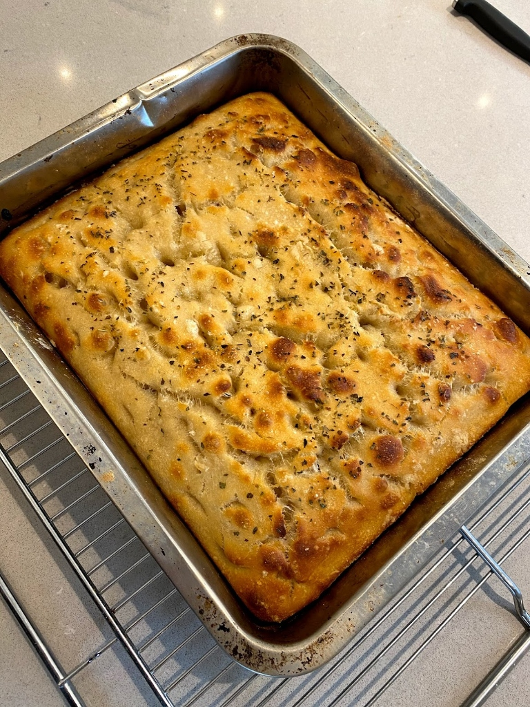

The Easiest Sourdough: No-Shape Focaccia
If the standard sourdough loaf feels a bit intimidating, start here. Sourdough Focaccia is incredibly forgiving. There's no complex shaping, no Dutch oven required, and it's almost impossible to mess up.
Ingredients (for 1 Tray)
- 50-75g active sourdough starter
- 350g lukewarm water
- 400g strong white bread flour
- 8g fine sea salt
- Extra virgin olive oil (plenty of it!)
Method (Low Stress)
We use the same 2-day timeline as the Basic Loaf, but with much less hands-on work.
Quick Overview
-
Day 1:
Mix ingredients, 3 sets of folds, rise at room temp, then move to pan and fridge.
-
Day 2:
Proof in pan until jiggly, dimple with oil, and bake.
Detailed Steps
- Initial Mix: In a large bowl, whisk your starter into the water. Add the flour and salt. Mix until you have a sticky, shaggy dough. Cover and let rest for 30 minutes.
- Build Strength: Over the next 2 hours, perform 3 sets of "folds". Since this dough is wet, use wet hands to pull the edge up and fold it over. It doesn't need much—just enough to give it a bit of structure. Learn about folds.
- Bulk Rise: Let the dough sit covered at room temperature for 4-6 hours until it's looking puffy and has some bubbles on the surface.
- The Pan: Generously oil a 9x13 inch (approx) baking tray. Pour the dough into the center. Don't try to stretch it yet—it will naturally spread as it relaxes. Cover and place in the fridge overnight.
- Final Proof (Day 2): Take the tray out of the fridge 2-3 hours before you want to bake. It should have spread to fill most of the pan. Let it sit at room temperature until it's very jiggly and full of air bubbles.
- Dimpling: Preheat oven to 220°C (430°F). Drizzle more olive oil over the top. Press your fingertips deep into the dough to create those classic focaccia dimples. Sprinkle with sea salt and fresh rosemary.
- Bake: Bake for 20-25 minutes until the top is golden and the bottom is crispy. Remove from the pan immediately and cool on a wire rack to keep that base crunchy!